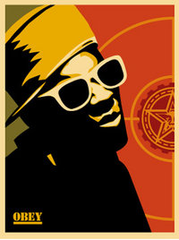
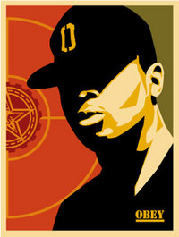

Public Enemy
From The Giant: The Definitive Obey Giant Site
|  |  |
{kind=link}
{kind=link}
From Wikipedia:
Public Enemy, also known as PE, is a seminal hip hop group from Long Island, New York known for their politically charged lyrics, criticism of the media and active interest in the concerns of the African American community.
Contents |
[edit] Members
Chuck D: Group leader, lyricist, main vocalist, and artwork
Flavor Flav: Lyricist, vocalist, producer, instrumentalist, hype-man, and comic relief
Professor Griff: Head of S1W, liaison between PE and S1W, road manager. Ensured that the chaotic Flavor Flav was available when needed. Occasional vocalist and/or producer, plays drums at live shows
Terminator X: DJ, Producer
Dj Lord: DJ, Producer
The S1W's are sometimes considered a part of Public Enemy, as well.
[edit] History
PE formed in Long Island, New York in 1982. They were signed to the still developing Def Jam record label after Rick Rubin heard Chuck D freestyling on a demo.
It then took roughly five years before their debut, Yo! Bum Rush The Show, was released in 1987 to critical acclaim. They went on to release the revolutionary It Takes a Nation of Millions to Hold Us Back in 1988, which performed better in the charts than their previous release, and included the hit single "Don't Believe the Hype." The album was voted Album of the Year by the The Village Voice Pazz and Jop Poll, the first rap album to be ranked number one by predominantly rock critics.
They also went on to release Fear of a Black Planet, which was just as militant and controversial as their first two releases. It was also the most successful of any of their albums to date and in 2005 was selected for preservation in the Library of Congress. It included the singles "911 is a Joke," which criticized emergency response units for taking longer to arrive at emergencies in the black community than those in the white community, and "Fight the Power," which is considered by many to be the group's anthem. The song is among the most popular and influential in Hip Hop history and was the theme song for Spike Lee's Do The Right Thing.
[edit] Legacy
Public Enemy were pioneers in many ways. For instance, Terminator X elevated DJing to a more refined art. Some of his most innovative scratching tricks can be heard on the song "Rebel Without A Pause." The Bomb Squad offered up a web of innovative samples and beats; Critic Stephen Thomas Erlewine declares that PE "brought in elements of free jazz, hard funk, even musique concrète, via their producing team, the Bomb Squad, creating a dense, ferocious sound unlike anything that came before."
PE revolutionized the rap world with their political, social and cultural consciousness, which infused itself into skilled and poetic rhymes with jazzy backbeats. They were the first rap-group to make extended world tours, which led to huge popularity and influence in Hip-Hop communities in Europe and Asia. They also changed the Internet's music distribution capability by being one of the first groups to release MP3 albums, a format virtually unknown at the time.
Public Enemy helped to form and define the so-called "crossover" genre of music (heavy rock music spliced with hip hop) by collaborating with New York thrash metal outfit Anthrax in 1991. The single "Bring the Noise|Bring Tha Noize" was a mix of semi-militant "black power" lyrics, grinding guitars and sporadic humour. The two bands, cemented by a mutual respect and the personal friendship between Chuck D and his Anthrax counterpart Scott Ian, introduced a hitherto alien genre to rock fans, and the two seemingly disparate groups even toured together. Flavor Flav's pronouncement onstage that "They said this tour would never happen" (as heard on Anthrax's Live: The Island Years CD) has become something of a legend in both rock and rap circles.
[edit] Origin of name
Chuck D had put out a tape to promote WBAU (the radio station he was working at the time) and to fend off a local rapper who wanted to battle him. He called the tape Public Enemy #1 because he felt like he was being persecuted by people in the local scene. This was the first reference to the notion of a "Public Enemy" in any of Chuck D's songs. The single was created by Chuck D with a contribution by Flavor Flav and Leybman, though this was before the group "Public Enemy" was assembled.
On the track "Louder Than A Bomb," from It Takes A Nation Of Millions To Hold Us Back, Chuck D reveals that the D in his nickname stands for "dangerous."
[edit] Controversy
- PE were also infamous for their alignment with S1W (Security of the First World), a militant black power movement. Professor Griff, a member of the group, made what many perceived to be anti-Semitic remarks, though he claimed that he did not condemn all Jews, just Zionists. This explanation did little to lessen the controversy. Griff left the band as a result of these remarks, and founded his own band, the Last Asiatic Disciples, whose lyrics were even more politically and racially charged than Public Enemy's. Chuck D himself has also made what were perceived as anti-Semitic remarks, and some of his lyrics have also been perceived as such. He makes comments in "Welcome To The Terrordome" that can be percieved as anti-Semitic as well as naming a song "Swindler's Lust" twisting the title of Shindler's List.
- A verse of the band's hit "Fight the Power" accuses Elvis Presley and John Wayne of being racists. The remarks about Elvis aroused some controversy in both the white and black communities. Many black commentators used the controversy to bring up the racial issues raised by Elvis's career as a white superstar who was heavily influenced by black musical styles.
- Chuck D has been a vocal supporter of file sharing, claiming that it will perpetuate music and ultimately help more artists than it will hurt.
[edit] Presently
PE still continues to perform and write, though with some attrition. Terminator X took early retirement and was replaced by Atlanta native DJ Lord as the group's main DJ. Chuck D and Professor Griff are also members of a band named Confrontation Camp, a funk/rock band. Chuck D's lecture series on "Rap, Race, Reality & Technology" has been used as the basis for his lyrics on We Are Gathered Here, an album by the group Fine Arts Militia, of which he is a member.
In September of 2005, Flavor Flav reunited with Public Enemy to record a rap protest song, "Hell No We Ain't All Right!", criticizing policy issues surrounding the response to Hurricane Katrina, and the George W. Bush administration in particular. Early 2006 saw the release of a new album entitled Rebirth of a Nation which included this protest song and 15 more tracks produced and written by Paris.
[edit] Discography
- Yo! Bum Rush the Show (1987)
- It Takes a Nation of Millions to Hold Us Back (1988)
- Fight the Power...Live! (1989)
- Fear of a Black Planet (1990)
- Apocalypse '91...The Enemy Strikes Black (1991)
- Greatest Misses 1986-1992 (1992)
- Muse Sick-n-Hour Mess Age (1994)
- Autobiography Of Mistachuck (1996)
- He Got Game (soundtrack) (1998)
- BTN 2000 (online released mega-mix which initialized PE's leaving Def Jam records) (1999)
- There's a Poison Goin' On (1999)
- Revolverlution (2002)
- Power to the People and the Beats: Public Enemy's Greatest Hits (2005)
- New Whirl Odor (2005)
- Rebirth of a Nation (2006)
[edit] External links
- Public Enemy's official website
- Slam Jamz, Chuck D's online record label
- In-Depth Tribute Site to Public Enemy
- Public Enemy Lyrics